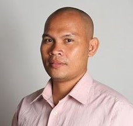

About Me
Chrestopher M. Pabalate
Cres
Let me introduce myself to all of you, I am a father of four wonderful kids. I'm married to my eternal companion, Rosalie at the Cebu temple. I am from Cagayan de Oro, Philippines, what they called the City of Golden Friendship.
I like Mountain Biking. This is my only sports and as my exercise. I also like playing chess with my friends. I also love to read books and any other written materials where I can gain more additional knowledge. The scriptures are my favorite.
I am currently working as Web Admin of Process Industry Informer. I have a goal to learn Web Designing And Computer Programming. This can give me an edge to my current employment. I pursue my studies in order for me to find a better job that can give my family a better living and become self reliant.
I have been a member of the church of Jesus Christ of Latter-Day Saints for 38 years. I was not able to serve as a full time missionary because I was inactive during my youth because of my employment situation but I am serving now on many different callings already after returning to the church from inactivity. Now I am happy with my decision to come back and it really blessed my life.
It is my goal to learn more things even though I am already old to go to college. Every time I learn new things it made me happy. And this is the reason why I am here now learning new things through BYU Pathway. I happy to meet you all fellow learners.
Thank you very much for reading my page.